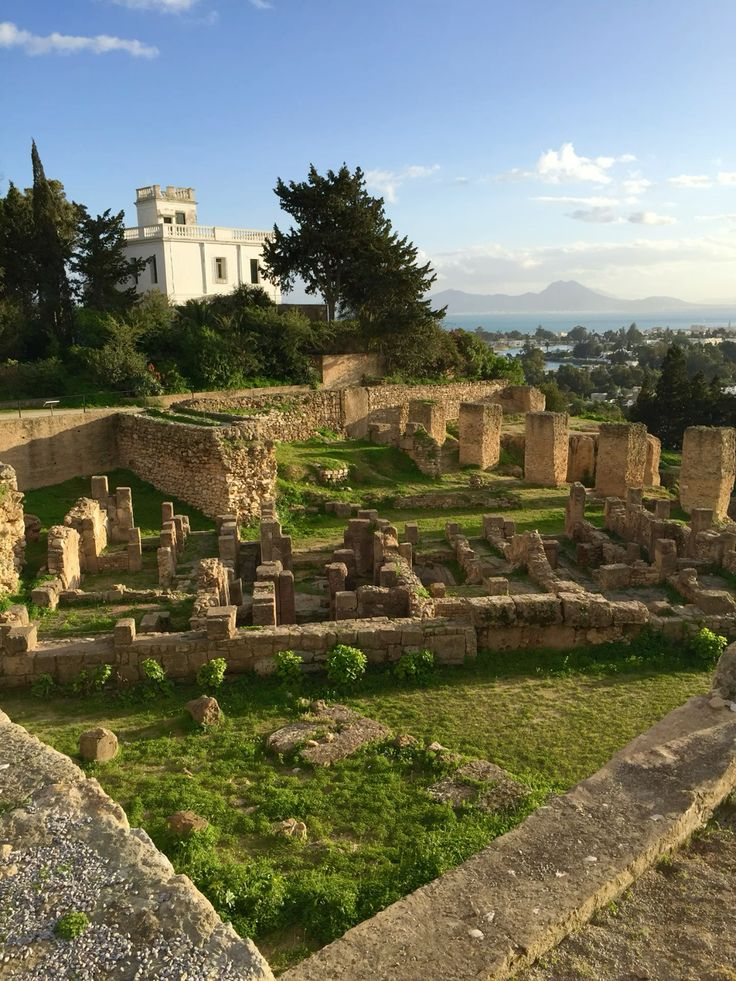

Tunis, the beating heart of the nation, is a Mediterranean capital where historical depth meets modern energy. The city is famous for its grand French-colonial architecture along Avenue Habib Bourguiba, often called the ' Champs-Élysées of Africa.' From its bustling markets and elegant cafes to its iconic clock tower, Tunis offers a unique cultural mosaic. It is a city that never sleeps, bridging the gap between centuries-old traditions and a fast-growing contemporary lifestyle. Exploring the capital is an invitation to discover the true soul of modern Tunisia."


Stepping into the Medina of Tunis is like traveling back in time to the 7th century. This UNESCO World Heritage site is a labyrinth of narrow alleys, arched doorways, and secret courtyards filled with the scent of jasmine and incense. As you wander through the vibrant souks, you’ll discover the majestic Zitouna Mosque and traditional palaces that showcase exquisite Islamic craftsmanship. The Medina is not just a market; it is a living museum where heritage is preserved in every stone and handcrafted treasure. It remains the most authentic and spiritual corner of the capital."



Once the most powerful rival to Rome, the ancient city of Carthage stands as a symbol of pride and resilience. Perched along the turquoise coast, this archaeological site reveals the remains of a civilization that once ruled the Mediterranean. From the impressive Antonine Baths to the legendary Punic Ports and the Byrsa Hill, Carthage tells a story of greatness, destruction, and rebirth. Walking through these ruins, visitors can feel the echoes of Queen Dido and General Hannibal. It is a sacred ground where history comes alive against the backdrop of the sea."
.jpg)


Overlooking the Gulf of Tunis, the picturesque village of Sidi Bou Said is a masterpiece of Mediterranean beauty. Famous for its iconic blue doors, white-washed walls, and vibrant bougainvillea flowers, this hilltop sanctuary has inspired artists and poets for generations. Wandering through its cobblestone streets leads you to the famous Café des Délices, where you can enjoy a mint tea while soaking in the breathtaking sea views. Sidi Bou Said is the ultimate destination for romance and serenity, offering a magical atmosphere that captures the essence of Tunisian elegance."


Located in the heart of Tunis, the Bardo Museum holds the heartbeat of our ancestors. Famous globally for its breathtaking mosaic floors and walls, this palace turned museum takes you on a journey through the different civilizations that shaped Tunisia. From the famous portrait of the poet Virgil to massive scenes of the deep sea, the art here is so detailed it feels alive. Whether you are an art lover or a curious traveler, the Bardo offers a calm, beautiful escape into the golden age of the Mediterranean.